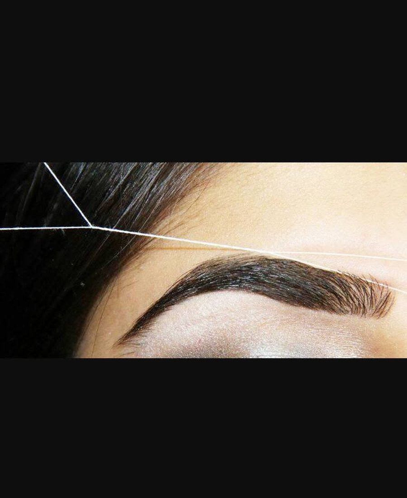

From a quick brow touch-up to larger-area waxing, our team brings a careful hand and a cleaner consultation process to every hair-removal service.
Threading is a gentler option for many facial areas and gives a very precise result, especially for brow shaping. Owner Sabina Thapaliya specializes in organic threading using simple cotton thread and careful technique.
It is especially helpful for sensitive skin, clients using active skin-care ingredients, and anyone who wants the cleanest possible brow line without heat or added chemicals.
Brow shaping remains one of the salon's most-booked services, with body waxing also available through the wider service menu.
Book Threading or Waxing
This page now follows the live Square menu: only a few services show fixed public pricing, while others vary by area and service length.
Hair should be at least 1/4 inch long for most waxing services. Avoid retinols for 48 hours before facial waxing or threading.
Not sure? We can guide you toward the gentlest, cleanest option for your skin and the area being treated.